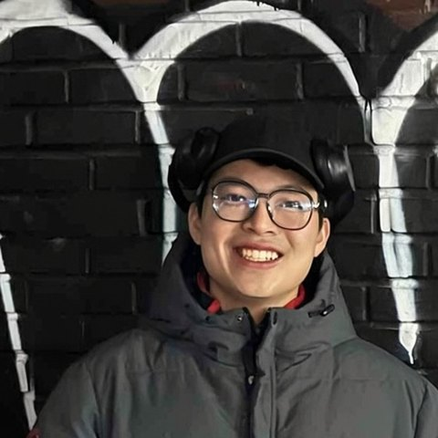

Nguyễn Khôi Nguyên (Alan)阮魁元
nknguyen [at] bu [dot] edu

I'm a junior researcher working on robot learning, robot perception, and machine vision systems. I'm at Boston University, advised by Wenchao Li in the Dependable Computing Lab and co-advised by Eshed Ohn-Bar in the Human-to-Everything (H2X) Lab. I'm most interested in VLMs and VLAs and how to put them to work in robotics, and in physics-informed approaches to ML and RL.
I graduated from BU in 2025 with dual degrees in Physics and Computer Science. As an undergraduate I was lucky to be advised by Lei Tian in computational imaging and Luca Dal Negro in nanophotonics. I've been an intern at Scale and Leuko, and I co-founded and led the BU AI Society.
Research
-
Quantum states of light in cavity QED: A computational study of Wigner function dynamics and atom–field entanglement in the Jaynes–Cummings model
Preprint · Under review at the European Journal of Physics · 2026
A numerical study of the resonant Jaynes–Cummings model (n̄ = 10). Time-resolved Wigner functions show the coherent field becoming a Schrödinger-cat-like state at half the revival time (Wigner negativity δ = 0.85, purity 0.96), where the atom and field nearly disentangle; coherent, thermal, squeezed-vacuum and Fock fields are compared through the reduced atomic entropy and the logarithmic negativity.

Wigner function versus Husimi Q as the field evolves (n̄ = 10). Only the Wigner function shows the cat’s negative interference fringes; Q stays positive, with two smooth lobes. 
Coherent-state field (n̄ = 10): inversion, atomic entropy and field purity through one cycle. Entropy bottoms out at 0.14 bit as purity peaks at 0.96. @misc{nguyen2026qsol, author = {Nguyen, Nguyen Khoi}, title = {Quantum states of light in cavity {QED}: A computational study of {W}igner function dynamics and atom--field entanglement in the {J}aynes--{C}ummings model}, year = {2026}, note = {Preprint, under review at European Journal of Physics. Code: https://github.com/alanknguyen/QSOL\_CQED, doi:10.5281/zenodo.24262358}, url = {https://www.researchgate.net/publication/404323301_Quantum_States_of_Light_in_Cavity_QED_A_Computational_Study_of_Wigner_Function_Dynamics_and_Atom-Field_Entanglement_in_the_Jaynes-Cummings_Model} }

Book Manuscripts
-
Engineering Fourier Optics
268 pages · Third draft · Unfinished
A textbook draft on Fourier optics for engineers: linear systems, the angular spectrum, Fresnel and Fraunhofer diffraction, and numerical propagation, with Python and MATLAB code for every section.
Also covers sampling, arrays, gratings, Talbot self-imaging, zone plates and scalar diffraction theory.
- Pages
- 268
- Draft
- Third draft
- Main source
- BU ENG EC 562, Fourier Optics in Engineering
- Also draws on
- BU ENG EC 522, Computational Optical Imaging by Lei Tian
- Primary sources
- J. W. Goodman, Introduction to Fourier Optics, 4th ed. (W. H. Freeman, 2017)
D. G. Voelz, Computational Fourier Optics: A MATLAB Tutorial (SPIE Press, 2011)
Part of Engineering Fourier Optics: Theory, Applications and Computation, a draft soon to be submitted to Springer. All text and figures are my own. The draft began as my notes on Luca Dal Negro's EC 562 Fourier Optics in Engineering (Fall 2023) and Lei Tian's EC 522 Computational Optical Imaging (Spring 2024) at Boston University, and has grown well beyond them, with derivations, worked examples, and Python and MATLAB code for each section. Further application chapters, written by senior researchers and PhD students, are in progress and not yet included.

Notes
These are my own notes from courses and reading, written mainly for my own reference. They’re working drafts, so expect gaps and errors.
- 2025
- 2025
Experience
- 2025 – PresentJunior Researcher, Dependable Computing Lab, Boston University
- Summer 2025Summer Intern, Physical Data & Post-Training, Scale
- Summer 2023Summer Intern, Data Science and Computer Vision, Leuko
Teaching
- 2024 – 2026Teaching Assistant, Boston University
- 2023Learning Assistant, Boston University
Teaching Assistant, Boston University
Department of Electrical and Computer Engineering
- Fall 2026EC 545: Cyber-Physical Systems (Graduate Level)
with Prof. Wenchao Li- Hardware Lecture 1: The ROSMASTER X3 robot platform PPTX, 4.4 MB
- Spring 2026EC 575: Semiconductor Devices (Graduate Level)
with Prof. Enrico Bellotti - Fall 2025EC 574: Physics of Semiconductor Materials (Graduate Level)
with Prof. Enrico Bellotti - Spring 2025EC 575: Semiconductor Devices (Graduate Level)
with Prof. Enrico Bellotti
Learning Assistant, Boston University
Department of Physics
- Spring 2023PY 212: General Physics II
with Prof. Wanzheng Hu
Service
- 2023 – 2025Co-Founder and President, Boston University AI Society
- 2022Founder and President, Boston University Chess Club
- 2023 – 2025Co-Founder and President, Boston University AI Society
Grew BU's largest student-run AI community; raised $10,000+ for compute hardware. - 2023 – 2025AI Advisor, Boston University Student Government
On a committee reporting to BU's President; advised on TerrierGPT, BU's AI platform. - 2023 – 2025Committee Member, Boston University Ignite Student Council
Approved club funding and connected CS and engineering clubs for joint projects. - 2022